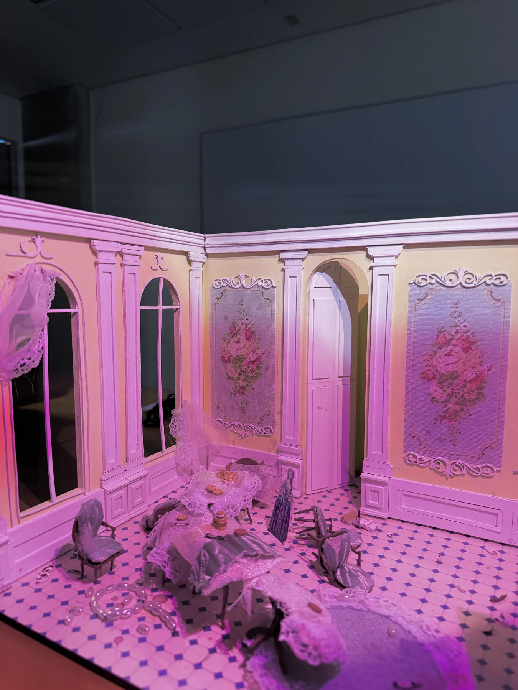
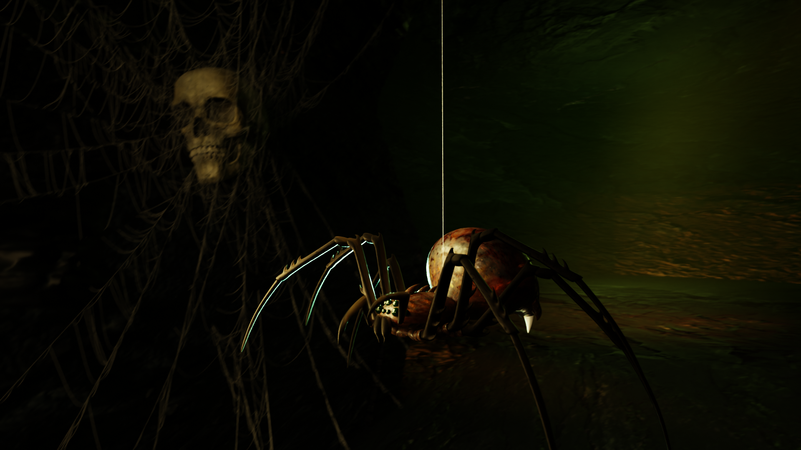
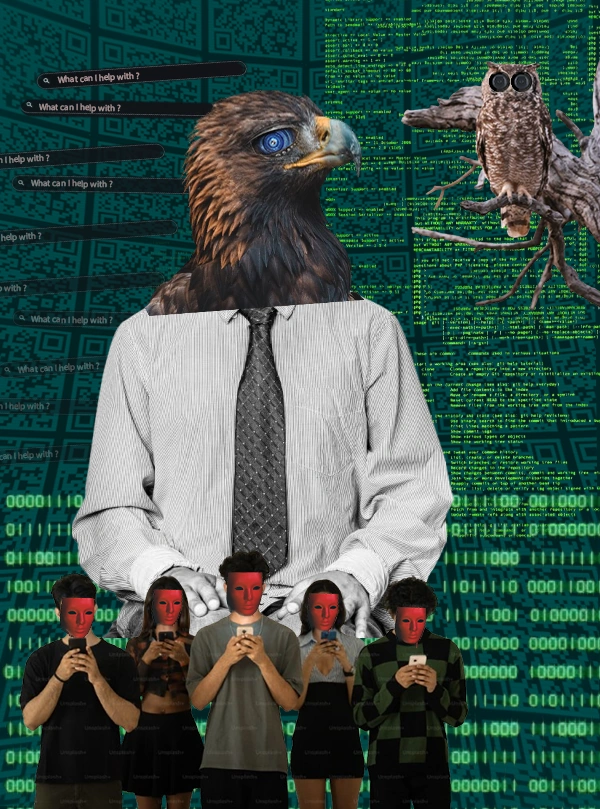
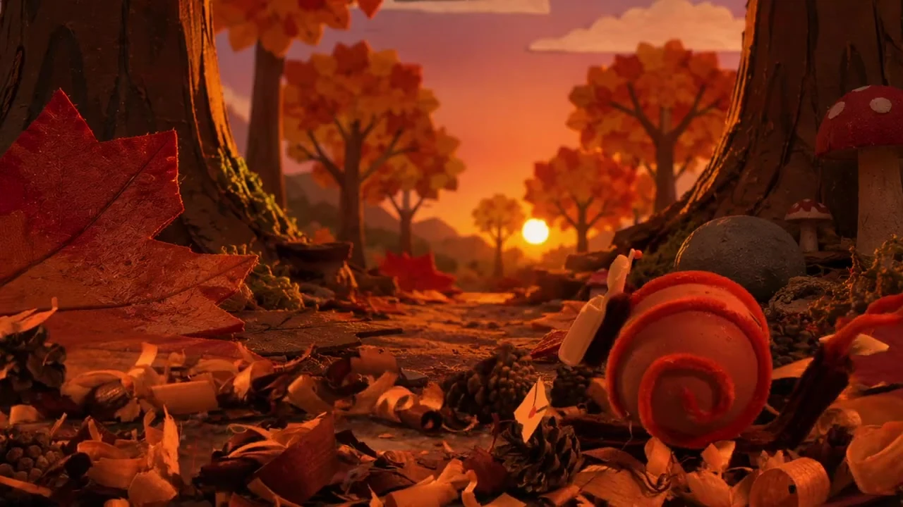

3D, motion design, stop-motion, direction artistique et photographie. Six projets choisis pour ce qu'ils racontent, pas pour la note obtenue.

Décor, moodboard et métaphores visuelles pour une nouvelle littéraire — de la scène choisie à la maquette exposée.

Modélisation, texturing et éclairage d'une araignée intégrée à un environnement de grotte complet.

Réappropriation dadaïste de Picabia — et sa mise en scène dans une exposition virtuelle.
Organisation de tournage et éléments d'interface sci-fi conçus dans After Effects.

Décor fabriqué à la main, tournage en fond vert et compositing DaVinci Fusion.
Trois séries : la couleur, la lumière, et une narration en quatre images.
Chaque fiche projet montre le résultat, le processus (moodboards, tournage, fabrication) et mon rôle précis — pas seulement le rendu poli.